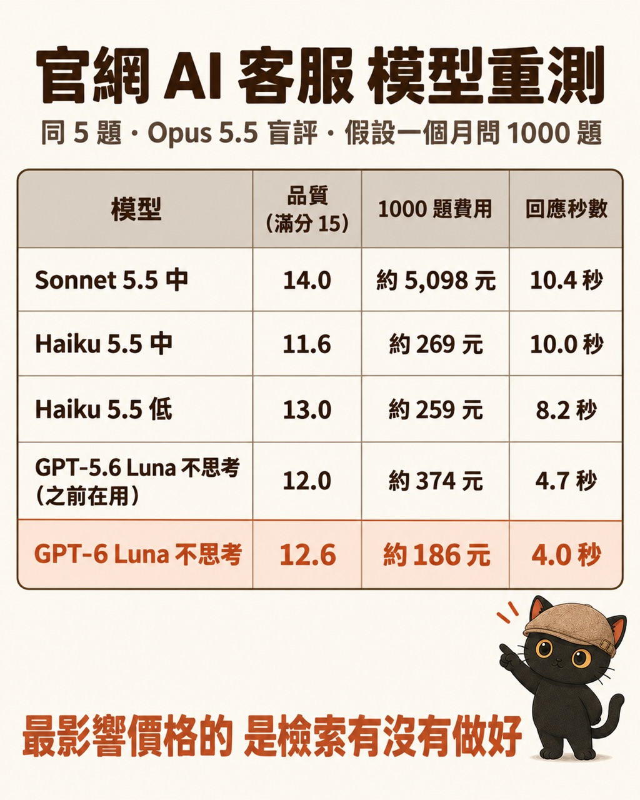

這篇在講什麼
Haiku 5.5 跟 GPT-6 Luna 這兩款小模型很實用又便宜，所以我把官網 AI 客服「咪卡」又重測了一次。同樣 5 題官網常見問題，比了 14 組模型和推理等級，看分數、一個月要花多少錢、回一題要等幾秒。測完我想講兩個重點：第一，Claude 的訂閱方案現在每月送 API 額度；第二，我的判斷是把檢索做好，效果遠大於換模型；這點我還沒做對照實驗，文中會講清楚依據。
- 想在自己的網站放 AI 客服，不知道該選哪個模型、一個月會花多少的人
- 已經放了 AI 客服，覺得它回答不夠好，正在考慮換更強模型的人
- 有 Claude 訂閱，聽說會送 API 額度，不知道去哪裡領的人
- 一張表：五個主要選項的分數、月費、回應秒數
- 客服回答不好時的檢查順序：先看扣分理由，再修規則，再補檢索，最後才換模型
- Claude 訂閱附 API 額度的申請步驟，和一段讓你自己的 AI 替客服做盲評的提示詞
Haiku 5.5 跟 GPT-6 Luna 出來，我把官網客服重測一次
我的官網右下角有一隻 AI 客服咪卡，訪客問問題，它幫忙找最近的活動和對應的文章。
之前咪卡用的是 GPT-5.6 Luna，那時候價格夠平民，我就開始做官網客服。最近 GPT-6 Luna 跟 Haiku 5.5 都出來了，這兩款小模型很實用又便宜，所以我再測一次。
測法是同一份咪卡正式程式、同樣 5 題官網常見問題，每一組的回答打亂、拿掉模型名稱，交給 Opus 5.5 盲評。每題看準確、有用、守規三項，各 5 分，滿分 15。品質是 5 題的平均，秒數是 5 題的中位數。費用是假設一個月問 1000 題、只算模型費，用實測的輸入輸出 token 乘官方標準價，換成台幣（1 美元約 32 元），沒有算快取折扣。
重測結果：五個主要選項的分數、月費、秒數

品質最高的是 Sonnet 5.5，但一個月要五千多塊，是兩款小模型的 20 倍上下。Haiku 5.5 低和 GPT-6 Luna 不思考，分數都在 12 到 13 分，每月 1000 題約 186 到 259 元。
其他 9 組（Sonnet 低和高、Haiku 高、GPT-6 Luna 低中高、Gemini 3.8 Flash 低中高）我也測了。其中 GPT-6 Luna 開到中、高時，有題目回不出來，原因寫在文末技術備忘。
| 模型 | 品質（滿分 15） | 1000 題費用 | 回應秒數 |
|---|---|---|---|
| Sonnet 5.5 中 | 14.0 | 約 5,098 元 | 10.4 秒 |
| Haiku 5.5 中 | 11.6 | 約 269 元 | 10.0 秒 |
| Haiku 5.5 低 | 13.0 | 約 259 元 | 8.2 秒 |
| GPT-5.6 Luna 不思考（之前在用） | 12.0 | 約 374 元 | 4.7 秒 |
| GPT-6 Luna 不思考 | 12.6 | 約 186 元 | 4.0 秒 |
14 組全部攤開：點任一列看明細
上面只列五個主要選項。下面這張是 14 組全部，長條越長，代表這次 5 題的評分越高，顏色看費用（綠＝一個月 300 元內、黃＝300 到 600 元、紅＝超過 600 元；費用是每個月 1000 題、新台幣的預估，用實測 token 乘官方價格算出），金色圓點越左回得越快。點任一列，可以看那一組每題花多少、用了多少 token、等了幾秒。
看不到表的話，可以另開一頁看評量表 ↗。
- 新模型出來，我怎麼知道它對我的工作真的比較好？：這一段只比這一次的結果，那篇講怎麼設計一組不會變的考題，換模型時每次都用它來比
推理開高開低，月費只差幾塊錢
一開始我看到 Haiku 5.5 低拿 13.0、中只拿 11.6，覺得很奇怪：想得比較多，分數反而比較低？
所以我讓 Haiku 5.5 低和中各重跑三次，用自己電腦的訂閱額度跑，不花 API 錢（我在自己電腦上用 Claude Code 的訂閱登入，把同一份客服程式跑一遍）。三次平均下來，低 10.7、中 10.3，三輪的分數範圍互相重疊，目前不足以判定哪個比較好，第一次那個差距沒有再出現。這次分數普遍比較低，是因為我同時把評分規則改嚴了。
錢的部分更清楚。咪卡每回答一題，都要先讀 5.7 萬到 7.5 萬 token 的官網資料（人設加全站文章目錄），錢大多花在這裡。Haiku 5.5 低和中一個月差不到 10 塊錢，GPT-6 Luna 低和不思考的月費幾乎一樣。
- 頂規 AI 模型很貴，哪些事交給它、哪些交給便宜的？：這一段只講客服這個任務，那篇講什麼樣的工作才值得交給貴的模型
回答被扣分，多半是我自己的規則在打架
我把重跑的 30 則回答的扣分理由拿出來看，有 28 則被扣在同一件事：段落太多、一次塞太多下一步。
查下去是我自己寫的規則在打架。咪卡的規則一條要它「最多三小段、一次只給一個下一步」，另外幾條又要它附文章、附一段可以複製的提示詞、碰到整理資料加一句安全提醒、查不到給 LINE。每一條都合理，加在一起就裝不進三段。
我把規則對齊成一條骨架：接住訪客的問題、給一筆最合適的內容、留一個下一步。其他動作只能放進骨架裡的位置，不能另外加段。
下面「改規則前」的三輪，就是上一段 Haiku 5.5 低那三輪的回答，這次跟改規則後的三輪混在一起重新盲評，所以分數是 10.4，上一段是 10.7。同一批回答換一次評審就差 0.3 分，這也提醒我：5 題的分數差一點點，不能當真。
| Haiku 5.5 低，各跑三次 | 改規則前 | 改規則後 |
|---|---|---|
| 總分（滿分 15） | 10.4 | 11.3 |
| 守規 | 2.9 | 3.9 |
| 平均字數 | 290 字 | 195 字 |
| 超過三段 | 9／15 | 2／15 |
| 回應秒數 | 8.2 秒 | 6.5 秒 |
模型沒換，只改規則，分數上來、回答變短、還快了快 2 秒。「有用」這一項倒是掉了一點，有幾則只叫訪客去讀文章，下一步太空泛，這是我下一輪要修的。
把檢索做好，效果遠大於換模型
測完我最想講的是這件事：把檢索做好，效果遠大於換模型。這是我從扣分理由看出來的判斷，還沒做「模型固定、只改別名庫」的對照實驗。
咪卡找文章，靠的是三份資料：全站文章目錄、每篇文章的「別名庫」（訪客平常會怎麼口語問這篇），還有文章內文出現過的關鍵詞。訪客的問法命中別名庫，咪卡就直接回答、不用開思考，回得又快又便宜；沒命中，才開低度思考自己判斷。
別名庫長這樣：我那篇〈我想在官網放 AI 客服，API 是什麼、會不會很貴？〉掛了「官網 AI 客服要多少錢」「API 是什麼 會不會很貴」「客服用哪個模型」這些訪客會講的話。程式比對訪客的問法跟這些別名，對得上就算命中。你的客服如果沒有這個功能，最簡單的做法是在給 AI 的文章目錄裡，每篇多寫一行「訪客可能會怎麼問」。
所以別名庫接得越完整，越多題可以走快又便宜的路。重跑時扣分的理由裡，也有幾則是文章標題對不上、或把推測講成事實，這些換更強的模型也不一定解決，要回頭整理資料。
我現在的檢查順序：
- 先看扣分理由，分清楚是規則問題、找不到文章，還是模型真的答不好
- 規則打架就先改規則
- 找不到文章就補檢索：文章目錄寫清楚這篇解決什麼、別名庫補上訪客真的會講的話
- 這幾樣都做了，再考慮換模型
- 模型不是越聰明越好：我開始學著算 AI 的 CP 值：這一段只講客服為什麼要整理檢索，那篇講算 AI 成本時該看哪些地方
什麼是檢索、什麼是別名庫，我實際怎麼做
「檢索」就是客服回答之前先找資料的那一步：從整個網站的內容裡，找出跟訪客問題有關的那幾筆，再交給模型回答。找錯了，模型再強也只能把錯的資料講得很通順。
我的官網檢索有五個部分：
- 全站統一索引：官網每一筆內容，不只文章，還有課程、技能包、服務方案、小工具等八類，都在一份 site-index.json 裡，有標題、網址、日期、難度，和一句「這篇解決什麼」。咪卡每回答一題都會讀這份目錄，前面說的 5.7 萬到 7.5 萬 token，大部分就是它。
- 別名庫：search-aliases.js，每篇文章掛一串「訪客會怎麼問」的口語說法。2026-08-07 建的，隔天補進 11 場一對一約談逐字稿裡的真人原話。現在新文章上稿要補一條別名，沒補的話發布前的檢查會擋下來。
- 內文關鍵詞：程式自動從每篇文章內文抽出專有名詞，放進 article-keywords.js。訪客記得的詞常常只出現在內文，標題和摘要都沒有。
- 搜尋紀錄：記下訪客在站內搜了什麼、有沒有點結果。沒接住的問法，第一個修法就是回去補別名。
- 升級順序：別名庫先做，再看搜尋紀錄；只有沒接住的問法多到補不完，才考慮上向量檢索。
這件事我手上有兩組真實數字，量的是「找不找得到」，還不是客服分數：
- 2026-08-08 咪卡檢索實測：用 AI 讀文章摘要生出來的 30 題，前三名命中 90%；換成 11 場一對一約談的 37 題真人提問，只剩 28%。差在用字，訪客問「我到底算不算會用 AI 的人」，文章標題叫「AI 能力分級」。把真人問法補進別名庫後，改寫題的命中從 1/10 升到 7/10。這個數字只代表那批題目；陌生訪客的問法會不會同樣改善，我還沒另外驗證。
- 2026-10-01 站內搜尋健檢：近兩週 23 篇文章，各出 6 個訪客可能會打的搜尋詞，共 138 個，站內搜尋只找得到 62 個，45%。原因是中文沒拆詞，差一個字就找不到。
同一份資料，也讓 Google 和 AI 找得到你
我做這些，原本是為了站內搜尋和咪卡。後來發現，同一份整理成果，也可以拿來改善公開頁面的說明。下面是我自己方便理解的四種情況，對方找你的地方不同；各平台的實際曝光與引用不是我能保證的，我也還沒驗證這些做法帶來多少效果：
| 對方在哪裡找 | 你出現在哪裡 | 我做了什麼 |
|---|---|---|
| 在 Google 打字搜尋，看結果列表 | 列表裡有你的網頁連結，他點進來常見說法是 SEO | 每頁都寫好標題、描述、分享圖，整站有網站地圖（sitemap） |
| 在 Google 搜尋，看最上面那塊「AI 摘要」 | Google 用 AI 直接寫出答案，答案旁邊附的來源是你的頁面常見說法是 AIO／AEO | 別名庫就是「大家怎麼問」的對照表；每篇開頭先寫「這篇在講什麼、適合誰」 |
| 不用 Google，直接問 ChatGPT、Claude | AI 回答裡提到你的名字，或附上你的文章常見說法是 GEO | 每篇文章頁有給 AI 看的結構資料；網站放了一份整站目錄給 AI 一次讀懂 |
| 把你的網址貼給他自己的 AI，問「這是什麼」 | 他的 AI 有機會讀到你網站留給它的說明，可以參考它來介紹你AXO 是我自己的做法，不是通用標準 | 網站留了一段「給讀到這裡的 AI」的說明，請它用咪卡的身分接待；對方的 AI 讀不讀、採不採用，我無法控制 |
第二種跟第三種最容易搞混：第二種發生在 Google 搜尋頁上，第三種發生在聊天的對話框裡。所以同一份資料整理一次，站內給咪卡和搜尋框用，站外給 Google 和各家 AI 用。
可以直接複製的兩段指令
指令一：幫每篇文章建別名庫
指令二：幫文章目錄補「這篇解決什麼」
Claude 訂閱現在每月送 API 額度，去哪裡申請
這次會測 Claude，也是因為 Claude 的訂閱方案現在每個月附 API 額度，不用白不用。以下是 2026-10-10 查官方說明整理的條件，之後可能會變，以官方頁為準。
| 方案 | 每月 API 額度 |
|---|---|
| Max 5x | 100 美元 |
| Max 20x | 200 美元 |
| Team | 標準席每席 20 美元、進階席每席 100 美元，全隊上限 500 美元 |
| Pro、Free | 沒有 |
申請步驟：
- 到 claude.ai 的 Settings，點 Billing（Team 是 Organization settings 裡的 Billing）
- 在 API credits 按 Link organization
- 選一個 Claude Console 組織，或當場新建一個，接受條款就好，不用另外綁卡
額度每個帳單週期補發，用不完不累積。用完又沒有其他儲值就停，不會扣到訂閱方案。新訂戶要滿 7 天才有。額度可以用在 Claude API、Agent SDK、用 API key 跑的 claude -p；平常互動使用的 Claude Code 不算在這份額度裡。
官方說明：Monthly API credits for Max and Team plans ↗
- 我想在官網放 AI 客服，API 是什麼、會不會很貴？：這一段只講額度去哪裡領，那篇從頭講 API 是什麼、金鑰放哪裡、客服上線的四個步驟
我自己還沒處理完的部分
想替自己的 AI 客服做一次健檢：可以直接複製的提示詞
先準備好幾份客服對同一題的回答（不同模型或不同設定），自己拿掉模型名稱，連同正確答案一起交給你自己的 AI：
給你的 AI 讀的技術備忘（人可以跳過）
- 這次用到的兩個上限都是思考加回答合計：OpenAI Chat Completions 的
max_completion_tokens、Claude Messages API 的max_tokens，沒辦法只限回答。咪卡原本 OpenAI 上限 600 token，GPT-6 Luna 開到中、高時思考把 600 吃光，有題目只剩 43 字的空殼，所以那兩組分數很低（7.0、2.4）。 - 要「回答 300 到 500 字、思考約 2000 token」，做法是：合計上限放寬（我設 OpenAI 2500、Claude 2800），回答長度寫進人設規則。GPT 實測中文一字約 0.8 token。上限只是天花板，沒用到不花錢。
- 每則回覆最後固定接一行小提醒（免費講座加 LINE 社群），由程式接上，不經過模型，不佔字數也不花 token；訪客把對話帶回來時先剝掉，免得模型模仿。
- 秒數：Claude 用 claude 指令回報的模型回答時間（扣掉本機啟動）；Gemini 走本機 agy，用空題實測 3 次的啟動時間約 2.6 秒扣掉，屬估算；GPT 直接打 API。
- GPT-6 Luna 不思考是 10/10 補測，跟 GPT-5.6 Luna 不思考、GPT-6 Luna 低放一起重新盲評：12.6、12.0（與原分相同）、12.4（原分 11.4）。
- 新模型出來，我怎麼知道它對我的工作真的比較好？：換模型時用固定考題來比
- 頂規 AI 模型很貴，哪些事交給它、哪些交給便宜的？：貴的模型和便宜的模型怎麼分工
- 模型不是越聰明越好：我開始學著算 AI 的 CP 值：算 AI 成本的角度
- 我想在官網放 AI 客服，API 是什麼、會不會很貴？：客服從零上線的四個步驟
- 讓 AI 定時整理資料前，先決定它多久醒一次：另一個「先算成本再決定怎麼做」的例子